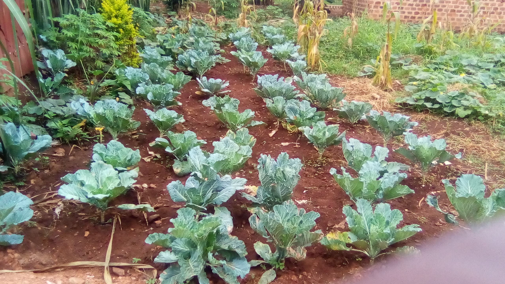

SINGING | READING | FOOTBALL | GARDENING | CONTACT ME
I do gardening of various crops at home though is on a small scale but I really love what I do, It normaly
keeps me busy hence giving less time to pear influence and its effects.

Sukuma wiki is an East African dish made with collard greens, known as sukuma, cooked with onions and spices.
It is often served and eaten with ugali (made from maize flour).
I also do practice sukuma growing though it aint that easy due to the disturbances by pests that eat it up
when its still at a young stage.
One can also plant it for commercial purpose since it is liked by many people within the country.
Contact me